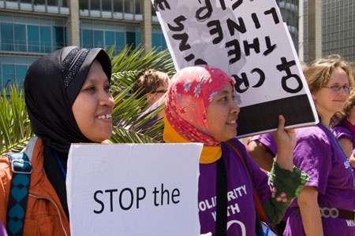

|
|

راهپیمایی کمپین 1 در9: همبستگی با آنان که خاموش نمی مانند
جنگ با بدن زنان را پایان دهید !
گزارش و عکس : رها عسگری زاده
سه شنبه5 آذر 1387
ظهر 15 نوامبر 2008 ، همزمان با کنفرانس جهانی حقوق زن در کشورهای در حال توسعه (AWID) در کیپ تاون افریقای جنوبی، اهالی شهر و شرکت کنندگان در کنفرانس راهپیمایی گسترده ای با عنوان کمپین 1 در 9 شاهد بودند. کمپینی با تلاش تلاش و همکاری 9 کمپین علیه یک نوع خشونت و در همبستگی با کسانی که خاموش نمی مانند .
کمپین یک در نه (1in 9) در فوریه سال 2006 در اعتراض به خشونت جنسی و تجاوزدر آفریقا آغاز به کار کرد. فعالان این کمپین خواستار بررسی پرونده های مربوط به این نوع خشونت ها در دادگاهی عادلانه بودند زیرا متهمان پرونده های تجاوز هرگز دادگاهی نشده بودند.
طی فراخوانی که روزقبل از راهپیمایی اعلام شده بود، شرکت کنندگان کنفرانس ( AWID)ساعت 12:30ظهرفردای ان روز از در ورودی سالن محل برگزاری ایوید حرکت کردند و درمنطقه وسیعی نزدیک به محل برگزاری کنفرانس به دیگر شرکت کنندگان پیوستند
تی شرت های بنفش رنگی که با شعار :« جنگ با بدن زنان را پایان دهید» در بین شرکت کنندگان پخش شد .

این راهپیمایی در حالی ادامه یافت که فعالان کمپین "ا در 9" و زنانی که از سراسر دنیا برای اعتراض به خشونت دراین راهپیمایی شرکت کرده بودند به صورت دسته جمعی سرود خوانده و پایکوبی می کردند .
حضور پلیس در کنار این راهپیمایی برای برقراری نظم بسیار چشمگیر بود .نیروهای پلیس در فاصله ای مشخص از شرکت کنندگان حرکت کرده و دخالتی در روند راهپیمایی نداشتند.
این راهپیمایی که به مدت 4 ساعت طول کشید تا ساختمان فرمانداری کیپ تاون ادامه داشت . پس از خواندن بیانیه و شعارها شرکت کنندگان به سمت محل برگزاری کنفرانس بازگشتند.
برخی از اعتراض های فعالین این کمپین شامل موارد زیر بود :
 ما راهپیمایی می کنیم برای KHWEZI :
ما راهپیمایی می کنیم برای KHWEZI :
که پس از تبرئه کسانی که به جاکوب زوماس Jacob Zuma’s تجاوز کرده بودند تبعید شد.
 ما راهپیمایی می کنیم برای Christina & Hola:
ما راهپیمایی می کنیم برای Christina & Hola:
که توسط یک گروه متجاوز مورد آزار و خشونت جنسی قرار گرفتند . این گروه این دونفر را خفه کرده و در آتش سوزاندند و هیچ کسی برای قتل آنها متهم شناخته نشد.
 ما راهپیمایی می کنیم برای تمام زنان خاموشی که تحت خشونت جنسی قرار می گیرند.
ما راهپیمایی می کنیم برای تمام زنان خاموشی که تحت خشونت جنسی قرار می گیرند.
 ما راهپیمایی می کنیم برای jenni & mag از کشور زیمباوه
ما راهپیمایی می کنیم برای jenni & mag از کشور زیمباوه
دو تن از فعالین حقوق زن زیمباوه که پس از اعتراض به دیر رسیدن غذا به مناطق محروم افریقا بازداشت شدند.
و ...
از گروه ها و کمپین های فعال در این کمپین سراسری می توان به گروه های زیر اشاره کرد :
Aids consortium; Aids law project; Aids legal network; Raped crisis, …
برای ارتباط با این کمپین می توانید با ایمیل زیر تماس بگیرید: